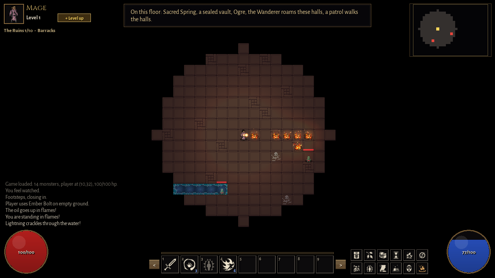
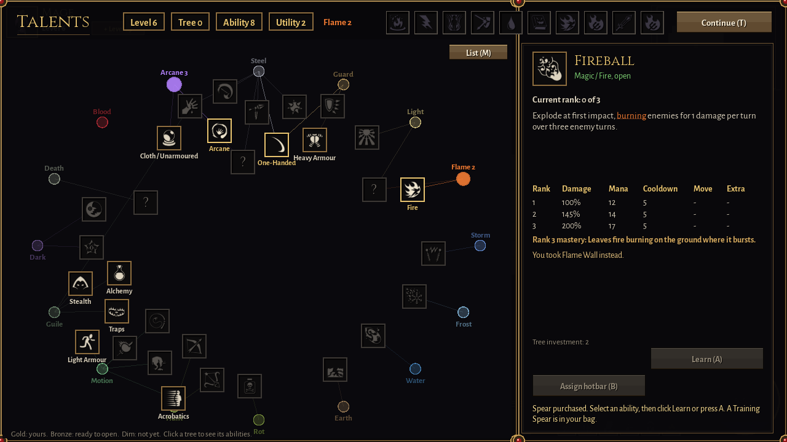

Consequences are visible.
Heavy attacks give the player a reaction window. Surfaces interact by rules that can be learned and reused across encounters.
Barrowlight / Design & development
A turn-based roguelike where the ground, the light, and the timing of a turn all matter.

THE DESIGN QUESTION
Can a player do better on the next run because they understand the world, even before they gain more power?
Barrowlight is built around that question. Encounters use telegraphed attacks, light and darkness, and surfaces that combine. Fire ignites oil, cold freezes water, and lightning travels through wet tiles. The aim is to make the environment something players can read and use.
READ THE FULL DESIGN LOG ↗FROM FEEL TO IMPLEMENTATION
Heavy attacks give the player a reaction window. Surfaces interact by rules that can be learned and reused across encounters.
Pure targeting functions drive both the on-screen preview and the actual cast, so the choice shown is the choice applied.
Rules are separate from rendering. A single seeded random stream makes bot-discovered bugs reproducible, alongside console and application tests.

CONTRIBUTION & PROCESS
I designed the systems, directed the architecture, and made the calls about what stayed, changed, or was cut.
Much of the code was implemented with AI coding assistants under my direction. I playtested each system by hand. The repository records that process and the technical trade-offs; it includes 19 console test programs, two application test programs, and a playtest bot.